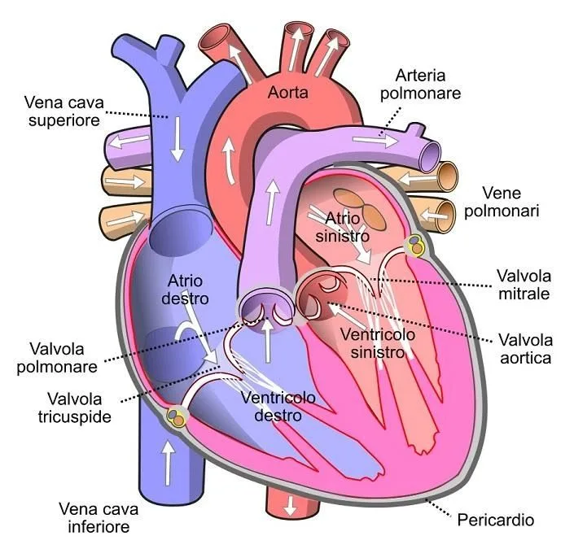
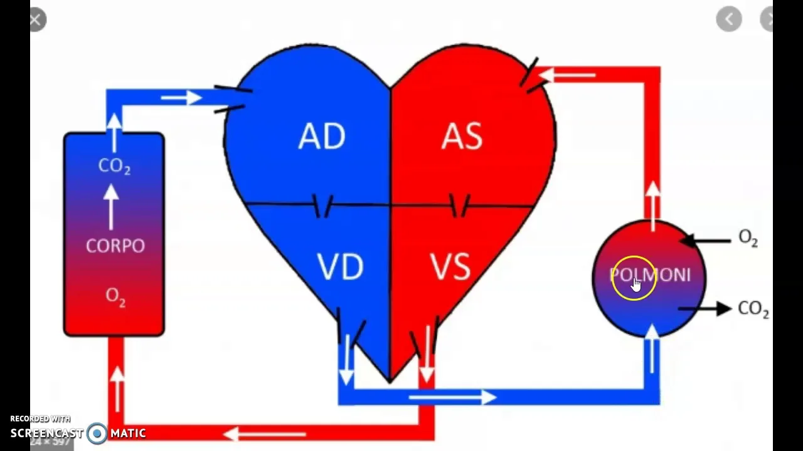

1. Il Cuore
Organo muscolare cavo situato nel mediastino (tra i polmoni), leggermente spostato a sinistra. Ha la funzione di pompa: spinge il sangue in tutto il corpo.
È diviso in 4 camere:
- 2 atri (superiori) – ricevono il sangue
- 2 ventricoli (inferiori) – pompano il sangue
Il lato destro gestisce il sangue venoso (poco ossigenato), il lato sinistro il sangue arterioso (ossigenato). Le due metà sono separate dal setto.
2. Tessuti del Cuore
- Pericardio – sacco fibro-sieroso che riveste esternamente il cuore, ha funzione protettiva.
- Miocardio – il tessuto muscolare vero e proprio, responsabile della contrazione. È un muscolo striato involontario.
- Endocardio – riveste internamente le cavità cardiache.

3. Piccola Circolazione (polmonare)
Cuore → polmoni → cuore
Il ventricolo destro pompa il sangue venoso verso i polmoni tramite l'arteria polmonare. Nei polmoni il sangue si ossigena (cede CO₂ e acquista O₂). Torna all'atrio sinistro tramite le vene polmonari.
4. Grande Circolazione (sistemica)
Cuore → corpo → cuore
Il ventricolo sinistro pompa il sangue ossigenato in tutto il corpo tramite l'aorta. I tessuti prelevano O₂ e cedono CO₂. Il sangue venoso torna all'atrio destro tramite le vene cave (superiore e inferiore).
5. Il Sangue
Tessuto connettivo liquido composto da:
- Plasma (55%) – parte liquida, trasporta proteine, ormoni, nutrienti, sali minerali.
- Globuli rossi / eritrociti (44%) – trasportano O₂ grazie all'emoglobina. Privi di nucleo.
- Globuli bianchi / leucociti (<1%) – difesa immunitaria.
- Piastrine / trombociti (<1%) – coagulazione del sangue.